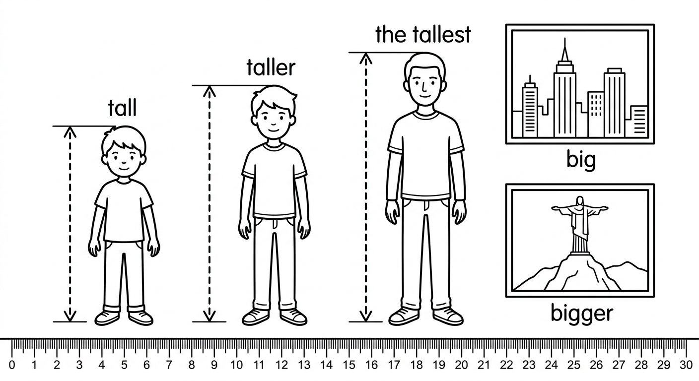
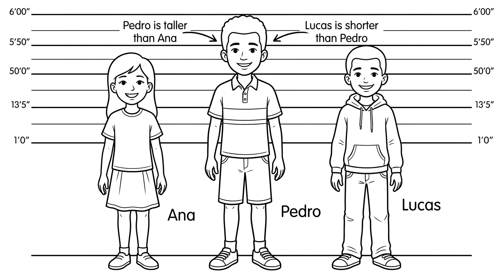
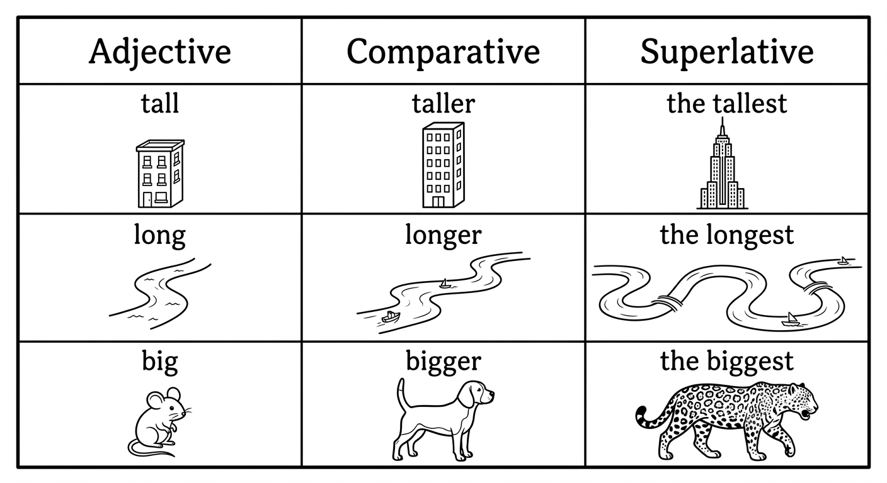
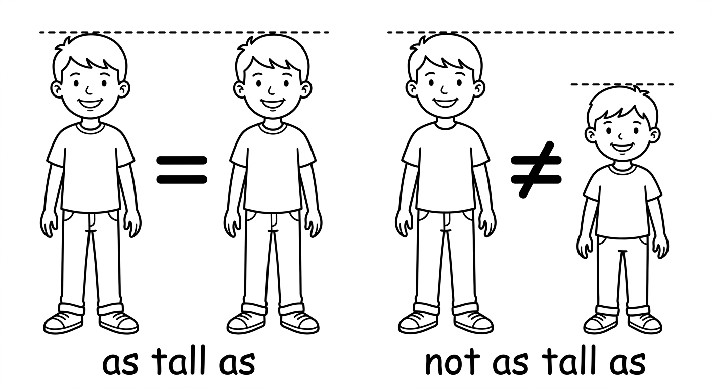
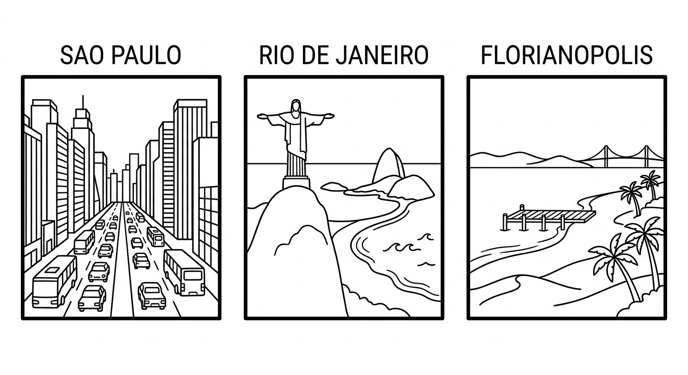

Comparatives and Superlatives
Learn how to compare people, places, and things in English. Use comparatives to compare two things and superlatives to talk about the number one in a group.

Comparatives
For short adjectives (1 syllable), add -er and use than to compare two things.
(Para adjetivos curtos de 1 silaba, adicione -er e use than para comparar duas coisas.)
| Adjective | Comparative | Example |
|---|---|---|
| tall | taller | Pedro is taller than Lucas. |
| old | older | My father is older than my mother. |
| fast | faster | A car is faster than a bicycle. |
| cheap | cheaper | This shirt is cheaper than that one. |
For long adjectives (2+ syllables, except those ending in -y), use more before the adjective and than after it.
(Para adjetivos longos de 2 ou mais silabas, use more antes do adjetivo e than depois.)
| Adjective | Comparative | Example |
|---|---|---|
| beautiful | more beautiful | Florianopolis is more beautiful than many cities. |
| interesting | more interesting | This book is more interesting than that one. |
| expensive | more expensive | Rio is more expensive than my city. |
| important | more important | Health is more important than money. |
Pay attention to these special spelling rules when adding -er:
(Preste atencao nestas regras de ortografia ao adicionar -er:)
| Rule | Adjective | Comparative |
|---|---|---|
| Short vowel + consonant: double the consonant | big | bigger |
| hot | hotter | |
| thin | thinner | |
| Ends in -y: change y to i, add -er | happy | happier |
| easy | easier | |
| busy | busier | |
| Ends in -e: just add -r | nice | nicer |
| large | larger |
Some adjectives have irregular comparative forms. You must memorize them!
(Alguns adjetivos tem formas comparativas irregulares. Voce precisa memoriza-los!)
| Adjective | Comparative | Example |
|---|---|---|
| good (bom) | better | This restaurant is better than that one. |
| bad (mau/ruim) | worse | The weather today is worse than yesterday. |
| far (longe) | farther / further | Manaus is farther than Salvador from here. |
Common Adjectives with Comparative Forms
| Adjective | Portugues | Comparative | Type |
|---|---|---|---|
| tall | alto | taller | + -er |
| short | baixo / curto | shorter | + -er |
| big | grande | bigger | double consonant + -er |
| small | pequeno | smaller | + -er |
| fast | rapido | faster | + -er |
| slow | lento | slower | + -er |
| cheap | barato | cheaper | + -er |
| expensive | caro | more expensive | more + adj |
| easy | facil | easier | y → -ier |
| difficult | dificil | more difficult | more + adj |
| beautiful | bonito/a | more beautiful | more + adj |
| interesting | interessante | more interesting | more + adj |
| happy | feliz | happier | y → -ier |
| good | bom | better | irregular |
| bad | mau / ruim | worse | irregular |
| far | longe | farther / further | irregular |

Examples in Context
Pedro is taller than Lucas.
Pedro e mais alto do que Lucas.
Sao Paulo is bigger than Curitiba.
Sao Paulo e maior do que Curitiba.
English is more difficult than I expected.
Ingles e mais dificil do que eu esperava.
This movie is more interesting than the last one.
Este filme e mais interessante do que o ultimo.
Camila is happier than she was last year.
Camila esta mais feliz do que estava no ano passado.
Brazilian coffee is better than most coffees in the world.
O cafe brasileiro e melhor do que a maioria dos cafes no mundo.
My grade in math is worse than my grade in English.
Minha nota em matematica e pior do que minha nota em ingles.
Manaus is farther from Brasilia than Belo Horizonte.
Manaus fica mais longe de Brasilia do que Belo Horizonte.
How do you know when to use -er or more? Count the syllables!
- 1 syllable → add -er (tall → taller, fast → faster)
- 2 syllables ending in -y → change y to i, add -er (happy → happier, easy → easier)
- 2 syllables (not ending in -y) → usually more (more modern, more famous)
- 3+ syllables → always more (more beautiful, more interesting, more expensive)
Dica: Conte as silabas! 1 silaba = -er. Terminados em -y = -ier. 3+ silabas = more.
Suggested time: 30 minutes
Common L1 interference: Brazilian Portuguese uses "mais...do que" for all comparatives. Students may try to say "more tall" instead of "taller." Emphasize the syllable-counting rule and practice with many examples before moving to exercises.
Activity: Write 10 adjectives on the board and ask students to sort them into two groups: "-er" adjectives and "more" adjectives. Then have them make sentences comparing things in the classroom.
Write the comparative form of the adjective in parentheses.
Escreva a forma comparativa do adjetivo entre parenteses.
Select the correct comparative form to complete each sentence.
Escolha a forma comparativa correta para completar cada frase.
Sao Paulo is _______ Rio de Janeiro. (big)
b) bigger thanThis book is _______ that one. (interesting)
b) more interesting thanMy English is _______ my Spanish. (good)
c) better thanToday is _______ yesterday. (hot)
c) hotter thanJuliana is _______ her sister. (happy)
b) happier thanComplete each sentence with the correct comparative form of the adjective in parentheses. Do not forget than!
Complete cada frase com a forma comparativa correta do adjetivo entre parenteses. Nao esqueca o than!
Superlatives
For short adjectives (1 syllable), add -est and always use the before it. Superlatives compare one thing to all others in a group.
(Para adjetivos curtos, adicione -est e sempre use the antes. Superlativos comparam uma coisa com todas as outras de um grupo.)
| Adjective | Superlative | Example |
|---|---|---|
| tall | the tallest | Pedro is the tallest student in the class. |
| old | the oldest | My grandfather is the oldest person in our family. |
| fast | the fastest | The cheetah is the fastest animal on land. |
| big | the biggest | Sao Paulo is the biggest city in Brazil. |
| hot | the hottest | January is the hottest month in Rio. |
Spelling rules are the same as for comparatives:
- Short vowel + consonant: double the consonant (big → biggest, hot → hottest)
- Ends in -y: change y to i, add -est (happy → happiest, easy → easiest)
- Ends in -e: just add -st (nice → nicest, large → largest)
For long adjectives (2+ syllables, except those ending in -y), use the most before the adjective.
(Para adjetivos longos de 2 ou mais silabas, use the most antes do adjetivo.)
| Adjective | Superlative | Example |
|---|---|---|
| beautiful | the most beautiful | Fernando de Noronha is the most beautiful beach in Brazil. |
| interesting | the most interesting | History is the most interesting subject for me. |
| expensive | the most expensive | That restaurant is the most expensive in town. |
| important | the most important | Education is the most important thing for our future. |
The same adjectives that have irregular comparatives also have irregular superlatives.
(Os mesmos adjetivos que tem comparativos irregulares tambem tem superlativos irregulares.)
| Adjective | Comparative | Superlative | Example |
|---|---|---|---|
| good (bom) | better | the best | This is the best pizza in town! |
| bad (ruim) | worse | the worst | Monday is the worst day of the week. |
| far (longe) | farther / further | the farthest / the furthest | Manaus is the farthest city from here. |
Examples in Context
The Amazon River is the longest river in South America.
O Rio Amazonas e o rio mais longo da America do Sul.
Sao Paulo is the biggest city in Brazil.
Sao Paulo e a maior cidade do Brasil.
Today was the happiest day of my life!
Hoje foi o dia mais feliz da minha vida!
Carnival is the most famous festival in Brazil.
O Carnaval e o festival mais famoso do Brasil.
Neymar is one of the best soccer players in history.
Neymar e um dos melhores jogadores de futebol da historia.
That was the worst movie I have ever seen.
Aquele foi o pior filme que eu ja vi.
Always use "the" before superlatives!
- the tallest (CORRECT) / tallest (WRONG)
- the most beautiful (CORRECT) / most beautiful (WRONG)
- the best (CORRECT) / best (WRONG, when used as an adjective before a noun)
Lembre-se: Sempre use "the" antes de superlativos! Em portugues, usamos "o/a mais..."

Dialogue: Comparing Cities, Sports, and Food
Suggested time: 30 minutes
Dialogue activity: Have students read the dialogue in pairs. Then ask them to underline all comparatives in one color and all superlatives in another. Count how many of each they found. (Answer: 6 comparatives, 5 superlatives)
Extension: Ask students to create their own short dialogue comparing two cities, sports, or foods they know, using at least 3 comparatives and 2 superlatives.
Write the superlative form of the adjective in parentheses. Remember to include the!
Escreva a forma superlativa do adjetivo entre parenteses. Lembre-se de incluir the!
Complete each sentence with the correct comparative or superlative form of the adjective in parentheses. Read carefully to decide which form is needed!
Complete cada frase com a forma comparativa ou superlativa correta do adjetivo entre parenteses. Leia com atencao para decidir qual forma usar!
As...As / Not As...As
Use as + adjective + as to say two things are equal or the same in some way.
(Use as + adjetivo + as para dizer que duas coisas sao iguais de alguma forma. Em portugues: "tao...quanto".)
| Structure | Example | Meaning |
|---|---|---|
| as + adjective + as | Pedro is as tall as Marcos. | Pedro and Marcos have the same height. |
| as + adjective + as | This test is as easy as the last one. | Both tests have the same difficulty. |
| as + adjective + as | My bag is as heavy as yours. | Both bags weigh the same. |
Use not as + adjective + as to say two things are not equal. The first thing has less of the quality.
(Use not as + adjetivo + as para dizer que duas coisas nao sao iguais. A primeira coisa tem menos dessa qualidade. Em portugues: "nao e tao...quanto".)
| Structure | Example | Meaning |
|---|---|---|
| not as + adj + as | Curitiba is not as big as Sao Paulo. | Curitiba is smaller than Sao Paulo. |
| not as + adj + as | English is not as difficult as Chinese. | English is easier than Chinese. |
| not as + adj + as | My car is not as fast as your car. | My car is slower than your car. |
Important: With "as...as" and "not as...as," use the base form of the adjective (NOT the comparative form).
- Pedro is as tall as Marcos. (CORRECT)
- Pedro is as taller as Marcos. (WRONG)
Examples in Context
Sao Paulo is as exciting as Rio de Janeiro.
Sao Paulo e tao empolgante quanto o Rio de Janeiro.
Camila is as smart as her brother.
Camila e tao inteligente quanto seu irmao.
This pizza is as good as the pizza in Italy!
Esta pizza e tao boa quanto a pizza da Italia!
My city is not as big as Sao Paulo.
Minha cidade nao e tao grande quanto Sao Paulo.
The bus is not as fast as the metro.
O onibus nao e tao rapido quanto o metro.
This exercise is not as difficult as the last one.
Este exercicio nao e tao dificil quanto o ultimo.

Suggested time: 20 minutes
Common mistake: Students often confuse "as...as" with comparatives. Remind them that "as...as" uses the BASE form of the adjective, never the comparative form.
Activity: Bring two objects to class (e.g., two books, two pens). Have students compare them using "as...as" and "not as...as." Then have them compare classmates (height, hair length, etc.) using polite examples.
L1 connection: "As...as" = "tao...quanto" and "not as...as" = "nao e tao...quanto." Showing this parallel helps students grasp the structure quickly.
Complete each sentence with as...as or not as...as and the adjective in parentheses. Look at the context to decide if the comparison is equal or unequal.
Complete cada frase com as...as ou not as...as e o adjetivo entre parenteses. Observe o contexto para decidir se a comparacao e igual ou desigual.
Reading & Writing
Brazil is a very big country with many amazing cities. Each city is different and special. Let me compare three of my favorite cities: Sao Paulo, Rio de Janeiro, and Florianopolis.
Sao Paulo is the biggest city in Brazil. It has more than 12 million people. It is more modern than most Brazilian cities, and it has the best restaurants in the country. You can find food from every part of the world there. However, Sao Paulo is not as beautiful as Rio because it does not have beaches. The traffic in Sao Paulo is the worst in Brazil - sometimes people spend three hours in their cars!
Rio de Janeiro is the most famous city in Brazil. It is famous for Carnival, the Christ the Redeemer statue, and its beautiful beaches. Copacabana and Ipanema are two of the most popular beaches in the world. Rio is warmer than Sao Paulo and more exciting for tourists. But Rio is not as safe as Florianopolis, and it is more expensive than many other cities.
Florianopolis is smaller than Sao Paulo and Rio, but many people think it has the best quality of life. The beaches in Floripa are as beautiful as the beaches in Rio, and the city is cleaner and quieter. It is not as expensive as Rio or Sao Paulo. Floripa is farther from the equator, so the winters are colder than in Rio, but the summers are wonderful.
So, which is the best city in Brazil? That is a difficult question! Each city has its advantages. Sao Paulo has the best food, Rio has the most famous landmarks, and Florianopolis has the best quality of life. I think every city in Brazil is special, and that is what makes our country the most interesting country in the world!
Pre-reading activity: Ask students: "What is the best city in Brazil? Why?" Write their answers on the board. This activates their prior knowledge and gets them thinking about comparisons before reading.
Reading strategy: Have students read the text once for general understanding. Then have them read it again and underline all comparatives in one color and all superlatives in another. They should also circle every "as...as" and "not as...as" structure.

Read each sentence. Write T (True) or F (False) based on the text.
Leia cada frase. Escreva T (Verdadeiro) ou F (Falso) de acordo com o texto.
Answer the questions in complete sentences based on the text.
Responda as perguntas com frases completas, baseando-se no texto.
Why does Sao Paulo have the best restaurants?
Because you can find food from every part of the world there.What is the worst problem in Sao Paulo according to the text?
The traffic is the worst in Brazil. Sometimes people spend three hours in their cars.Why are the winters colder in Florianopolis than in Rio?
Because Florianopolis is farther from the equator.According to the author, which city has the best quality of life? Why?
Florianopolis has the best quality of life because it is cleaner and quieter, and it is not as expensive as Rio or Sao Paulo.Choose one of the topics below and write a short paragraph (6-8 sentences) comparing two things. Use comparatives, superlatives, and as...as / not as...as structures.
Escolha um dos temas abaixo e escreva um paragrafo curto (6-8 frases) comparando duas coisas. Use comparativos, superlativos e estruturas as...as / not as...as.
Choose one topic:
- Two cities you know (your city and another city)
- Two sports you like (soccer and basketball, volleyball and swimming, etc.)
- Two friends or family members (compare their personalities, hobbies, appearance)
Try to use at least:
- 2 comparatives with -er than or more...than
- 1 superlative with the -est or the most
- 1 sentence with as...as or not as...as
Topic: I am going to compare _______________ and _______________.
Suggested time: 25 minutes (15 minutes writing, 10 minutes sharing)
Assessment criteria:
- Correct use of at least 2 comparative forms
- Correct use of at least 1 superlative form
- Correct use of at least 1 "as...as" or "not as...as" structure
- Correct spelling of comparative/superlative forms (doubling consonants, changing y to i, etc.)
- Clear and coherent paragraph structure
- Use of "the" before superlatives
Extension activity: After writing, have students share their paragraphs in small groups. Each group votes on the most interesting comparison and presents it to the class.
Differentiation: For weaker students, provide a model paragraph on the board. For stronger students, challenge them to use at least one irregular comparative and one irregular superlative.
Chapter 8 - Answer Key
Exercise 1: Write the Comparative Form
Exercise 2: Choose the Correct Comparative
Exercise 3: Complete the Sentences with Comparatives
Exercise 4: Write the Superlative Form
Exercise 5: Comparative or Superlative?
Exercise 6: Complete with As...As or Not As...As
Exercise 7: True or False
Exercise 8: Answer the Questions
Exercise 9: Writing
Answers will vary. Check for correct use of at least 2 comparatives, 1 superlative, and 1 "as...as" or "not as...as" structure. Look for correct spelling of comparative and superlative forms, use of "the" before superlatives, and use of "than" with comparatives. Paragraph should be 6-8 sentences and clearly compare two things.